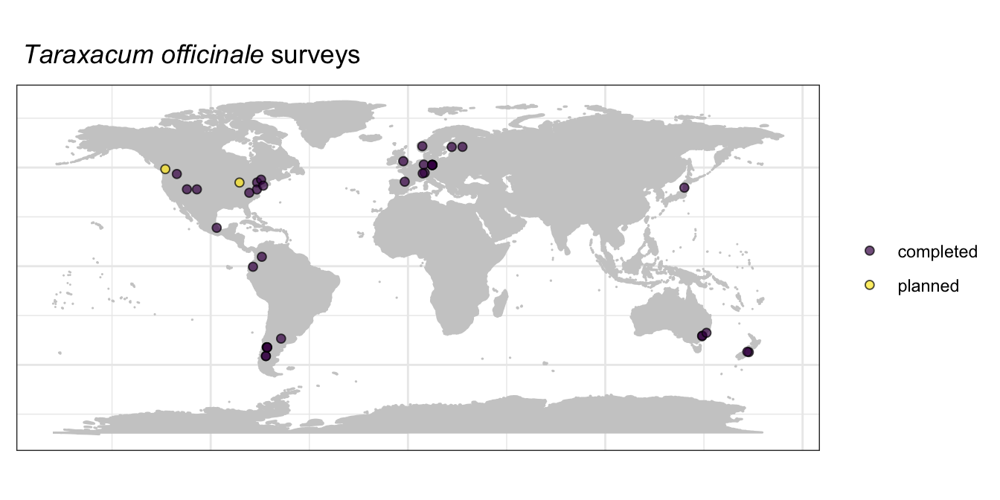

Sampling coordination
We are coordinating a global effort to survey herbivory on three focal plant species and on a diversity of species in five focal plant families: Apocynaceae, Asteraceae, Fabaceae, Rubiaceae, and Solanaceae. This page summarizes the surveys we have completed as well as surveys our members have plans to survey. This page represents a work in progress, and this information is primarily to help network members pick species and sites to survey.
Focal species
We have three focal species that we are aiming to sampling across the broadest possible geographic extent and across broad environmental gradients. These are Taraxacum officinale, Plantago major, and Plantago lanceolata. Below are maps of the locations of completed and planned surveys for each focal species. Any survey of one of these focal species will be useful to the project, but surveys in new locations, ecosystems, elevations, etc. will be especially useful.


Focal families
Below you will find maps, figures, and tables summarizing completed and planned surveys of species within each of our five focal families.
Apocynaceae
Sites with completed and planned surveys of species in the Apocynaceae
Number of species with completed or planned surveys in this focal family by growth form
| Plant family | Plant species | No. surveys |
|---|---|---|
| Apocynaceae | Apocynum androsaemifolium | 1 |
| Apocynaceae | Apocynum cannabinum | 2 |
| Apocynaceae | Asclepias asperula | 2 |
| Apocynaceae | Asclepias cryptoceras | 1 |
| Apocynaceae | Asclepias curassavica | 1 |
| Apocynaceae | Asclepias incarnata | 1 |
| Apocynaceae | Asclepias speciosa | 1 |
| Apocynaceae | Asclepias syriaca | 4 |
| Apocynaceae | Asclepias tuberosa | 1 |
| Apocynaceae | Asclepias verticillata | 2 |
| Apocynaceae | Calotropis procera | 2 |
| Apocynaceae | Gomphocarpus fructicosus | 1 |
| Apocynaceae | Landolphia dulcis | 1 |
| Apocynaceae | Vincetoxicum hirundinaria | 1 |
Asteraceae
Sites with completed and planned surveys of species in the Asteraceae
Number of species with completed or planned surveys in this focal family by growth form
| Plant family | Plant species | No. surveys |
|---|---|---|
| Asteraceae | Achillea ptarmica | 1 |
| Asteraceae | Ageratina altissima | 4 |
| Asteraceae | Ageratina havanensis | 1 |
| Asteraceae | Ageratum conyzoides | 1 |
| Asteraceae | Ageratum fastigiatum | 1 |
| Asteraceae | Antennaria neglecta | 1 |
| Asteraceae | Anthemis galilae | 1 |
| Asteraceae | Arctium minus | 2 |
| Asteraceae | Arnica cordifolia | 1 |
| Asteraceae | Artemisia ludoviciana | 1 |
| Asteraceae | Artemisia mongolica | 1 |
| Asteraceae | Aster oblongifolius | 1 |
| Asteraceae | Baccharis dracunculifolia | 1 |
| Asteraceae | Baccharis serrulata | 1 |
| Asteraceae | Balsamorhiza sagittata | 3 |
| Asteraceae | Bidens frondosa | 1 |
| Asteraceae | Bidens reptans | 1 |
| Asteraceae | Calyptocarpus vialis | 2 |
| Asteraceae | Celmisia discolor | 1 |
| Asteraceae | Celmisia spectabilis | 1 |
| Asteraceae | Centaurea stoebe | 2 |
| Asteraceae | Chaptalia integerrima | 2 |
| Asteraceae | Chromolaena odorata | 2 |
| Asteraceae | Cirsium arvense | 1 |
| Asteraceae | Conoclinium coelestinum | 2 |
| Asteraceae | Cyrtocymura scorpioides | 2 |
| Asteraceae | Echinacea angustifolia | 2 |
| Asteraceae | Echinacea purpurea | 6 |
| Asteraceae | Emilia praetermissa | 1 |
| Asteraceae | Encelia canescens | 1 |
| Asteraceae | Erigeron canadensis | 2 |
| Asteraceae | Erigeron glacialis | 2 |
| Asteraceae | Erigeron strigosus | 1 |
| Asteraceae | Eurybia macrophylla | 1 |
| Asteraceae | Flourensia thurifera | 1 |
| Asteraceae | Gaillardia pulchella | 1 |
| Asteraceae | Grindelia squarrosa | 3 |
| Asteraceae | Guizotia abyssinica | 1 |
| Asteraceae | Helianthella quinquenervis | 3 |
| Asteraceae | Helianthus annuus | 3 |
| Asteraceae | Helianthus occidentalis | 1 |
| Asteraceae | Heterotheca subaxillaris | 1 |
| Asteraceae | Hieracium pilosella | 3 |
| Asteraceae | Hulteniella integrifolia | 1 |
| Asteraceae | Hypochaeris chillensis | 1 |
| Asteraceae | Hypochaeris radicata | 2 |
| Asteraceae | Ixeridium dentatum | 1 |
| Asteraceae | Jacobaea vulgaris | 1 |
| Asteraceae | Jessea multivenia | 1 |
| Asteraceae | Jungia ferruginea | 1 |
| Asteraceae | Kalimeris integrifolia | 1 |
| Asteraceae | Kuhnia eupatorioides | 1 |
| Asteraceae | Kuhnia eupatroides | 1 |
| Asteraceae | Lactuca sibirica | 1 |
| Asteraceae | Leucanthemum vulgare | 1 |
| Asteraceae | Maianthemum racemosum | 1 |
| Asteraceae | Melanthera scandens | 1 |
| Asteraceae | Munnozia pinnatipartita | 1 |
| Asteraceae | Nabalus altissimus | 1 |
| Asteraceae | Olearia paniculata | 1 |
| Asteraceae | Parthenium hysterophorus | 1 |
| Asteraceae | Proustia cuneifolia | 1 |
| Asteraceae | Pulicaria dysenterica | 1 |
| Asteraceae | Raoulia eximia | 1 |
| Asteraceae | Ratibida pinnata | 1 |
| Asteraceae | Rudbeckia hirta | 3 |
| Asteraceae | Rudbeckia laciniata | 1 |
| Asteraceae | Rudbeckia triloba | 1 |
| Asteraceae | Senecio brunonianus | 1 |
| Asteraceae | Senecio crassulus | 1 |
| Asteraceae | Senecio elegans | 1 |
| Asteraceae | Senecio madagascariensis | 1 |
| Asteraceae | Senecio viscosus | 2 |
| Asteraceae | Solidago altissima | 6 |
| Asteraceae | Solidago caesia | 1 |
| Asteraceae | Solidago canadensis.altissima | 1 |
| Asteraceae | Solidago canadensis | 1 |
| Asteraceae | Solidago missouriensis | 1 |
| Asteraceae | Solidago simplex | 1 |
| Asteraceae | Solidago speciosa | 1 |
| Asteraceae | Solidago virgaurea | 1 |
| Asteraceae | Symphyotrichum cordifolium | 1 |
| Asteraceae | Symphyotrichum novae-angliae | 1 |
| Asteraceae | Symphyotrichum novi-belgii | 1 |
| Asteraceae | Symphyotrichum oblongifolium | 1 |
| Asteraceae | Taraxacum ceratophorum | 1 |
| Asteraceae | Taraxacum mongolicum | 1 |
| Asteraceae | Taraxacum officinale | 37 |
| Asteraceae | Tragopogon dubius | 1 |
| Asteraceae | Trichogoniopsos adenantha | 6 |
| Asteraceae | Tridax procumbens | 3 |
| Asteraceae | Tussilago farfara | 1 |
| Asteraceae | Verbesina encelioides | 1 |
| Asteraceae | Vernonia baldwinii | 1 |
| Asteraceae | Vernonia gigantea | 1 |
| Asteraceae | Wedelia acapulcensis | 1 |
| Asteraceae | Wyethia mollis | 2 |
Fabaceae
Sites with completed and planned surveys of species in the Fabaceae
Number of species with completed or planned surveys in this focal family by growth form
| Plant family | Plant species | No. surveys |
|---|---|---|
| Fabaceae | Acacia dealbata | 1 |
| Fabaceae | Acacia implexa | 1 |
| Fabaceae | Acacia longifolia | 1 |
| Fabaceae | Acacia suaveolens | 1 |
| Fabaceae | Acmispon wrangelianus | 1 |
| Fabaceae | Adesmia boronioides | 1 |
| Fabaceae | Amorpha canescens | 2 |
| Fabaceae | Aotus genistoides | 1 |
| Fabaceae | Astragalus alpinus | 2 |
| Fabaceae | Astragalus australis | 1 |
| Fabaceae | Bauhinia racemosa | 1 |
| Fabaceae | Cercis canadensis | 1 |
| Fabaceae | Chamaecrista fasciculata | 1 |
| Fabaceae | Crotalaria juncea | 1 |
| Fabaceae | Crotalaria pallida | 1 |
| Fabaceae | Crotalaria vitellina | 1 |
| Fabaceae | Cullen corylifolium | 1 |
| Fabaceae | Dalbergia miscolobium | 1 |
| Fabaceae | Desmodium gangeticum | 1 |
| Fabaceae | Desmodium glutinosum | 1 |
| Fabaceae | Desmodium incanum | 1 |
| Fabaceae | Desmodium podocarpum | 1 |
| Fabaceae | Desmodium procumbens | 1 |
| Fabaceae | Eysenhardtia texana | 1 |
| Fabaceae | Gleditsia triacanthos | 2 |
| Fabaceae | Glycine max | 1 |
| Fabaceae | Hedysarum boreale | 1 |
| Fabaceae | Indigofera hirsuta | 1 |
| Fabaceae | Lathyrus quinquenervius | 1 |
| Fabaceae | Latrobea pinnaculum | 1 |
| Fabaceae | Lespedeza hirta | 1 |
| Fabaceae | Lespedeza pilosa | 1 |
| Fabaceae | Lupinus arboreus | 1 |
| Fabaceae | Lupinus argenteus | 1 |
| Fabaceae | Lupinus perennis | 5 |
| Fabaceae | Lupinus pilosus | 1 |
| Fabaceae | Lupinus polyphyllus | 1 |
| Fabaceae | Lupinus sericeus | 1 |
| Fabaceae | Lupinus texensis | 3 |
| Fabaceae | Medicago polymorpha | 1 |
| Fabaceae | Melilotus albus | 1 |
| Fabaceae | Mimosa albida | 1 |
| Fabaceae | Mimosa tenuiflora | 1 |
| Fabaceae | Montigena novae-zelandiae | 1 |
| Fabaceae | Pediomelum tenuiflorum | 1 |
| Fabaceae | Phaseolus lunatus | 1 |
| Fabaceae | Prosopis glandulosa | 1 |
| Fabaceae | Prosopis velutina | 1 |
| Fabaceae | Psoralea corylifolia | 1 |
| Fabaceae | Psoralea corylifolium | 1 |
| Fabaceae | Senna cumingii | 1 |
| Fabaceae | Senna lindheimeriana | 1 |
| Fabaceae | Senna obtusifolia | 1 |
| Fabaceae | Senna occidentalis | 1 |
| Fabaceae | Sophora secundiflora | 1 |
| Fabaceae | Trifolium pratense | 1 |
| Fabaceae | Trifolium repens | 4 |
| Fabaceae | Ulex europeaus | 1 |
| Fabaceae | Vachellia aroma | 2 |
| Fabaceae | Vachellia astringens | 1 |
| Fabaceae | Vachellia caven | 1 |
| Fabaceae | Vicia sativa | 1 |
| Fabaceae | Vicia sepium | 1 |
| Fabaceae | Vicia villosa | 1 |
| Fabaceae | Wisteria floribunda | 1 |
Rubiaceae

Sites with completed and planned surveys of species in the Rubiaceae
Number of species with completed or planned surveys in this focal family by growth form
| Plant family | Plant species | No. surveys |
|---|---|---|
| Rubiaceae | Cephalanthus occidentalis | 1 |
| Rubiaceae | Coffea arabica | 2 |
| Rubiaceae | Coprosma lucida | 1 |
| Rubiaceae | Cordiera elliptica | 1 |
| Rubiaceae | Galium album | 1 |
| Rubiaceae | Galium aparine | 1 |
| Rubiaceae | Galium circaezans | 1 |
| Rubiaceae | Galium verum | 2 |
| Rubiaceae | Kelloggia galioides | 1 |
| Rubiaceae | Mitchella repens | 1 |
| Rubiaceae | Morinda pubescens | 1 |
| Rubiaceae | Palicourea padifolia | 1 |
| Rubiaceae | Palicourea rigida | 1 |
| Rubiaceae | Palicourea sp | 1 |
| Rubiaceae | Psychotria aubletiana | 1 |
| Rubiaceae | Stenaria nigricans | 1 |
Solanaceae

Sites with completed and planned surveys of species in the Solanaceae

Number of species with completed or planned surveys in this focal family by growth form
| Plant family | Plant species | No. surveys |
|---|---|---|
| Apocynaceae | Apocynum androsaemifolium | 1 |
| Apocynaceae | Asclepias asperula | 1 |
| Solanaceae | Datura wrightii | 1 |
| Solanaceae | Nicotiana attenuata | 2 |
| Solanaceae | Physalis heterophylla | 1 |
| Solanaceae | Physalis longifolia | 1 |
| Solanaceae | Salpichroa origanifolia | 1 |
| Solanaceae | Solanum carolinense | 3 |
| Solanaceae | Solanum cinereum | 1 |
| Solanaceae | Solanum donianum | 3 |
| Solanaceae | Solanum dulcamara | 1 |
| Solanaceae | Solanum elaeagnifolium | 2 |
| Solanaceae | Solanum incanum | 1 |
| Solanaceae | Solanum lycocarpum | 1 |
| Solanaceae | Solanum nigrum | 1 |
| Solanaceae | Solanum ptychanthum | 1 |
| Solanaceae | Solanum sp | 1 |
| Solanaceae | Solanum tridynamum | 3 |
Surveys of reproductive damage
This table lists species for which we currently have a completed or planned survey of reproductive damage (damage to flowers, fruits, or seeds).
| Plant family | Plant species | No. surveys |
|---|---|---|
| Acanthaceae | Ruellia nudiflora | 3 |
| Acanthaceae | Ruellia tuberosa | 1 |
| Apiaceae | Heracleum sphondylium | 1 |
| Asteraceae | Conoclinium coelestinum | 1 |
| Asteraceae | Encelia canescens | 1 |
| Asteraceae | Helianthus annuus | 1 |
| Asteraceae | Senecio brunonianus | 1 |
| Asteraceae | Vernonia gigantea | 1 |
| Boraginaceae | Heliotropium indicum | 1 |
| Brassicaceae | Thlaspi arvense | 1 |
| Cactaceae | Opuntia cespitosa | 1 |
| Campanulaceae | Lobelia polyphylla | 1 |
| Cistaceae | Cistus monspeliensis | 1 |
| Ericaceae | Erica multiflora | 1 |
| Fabaceae | Gleditsia triacanthos | 2 |
| Fabaceae | Senna cumingii | 1 |
| Fabaceae | Senna occidentalis | 1 |
| Fabaceae | Vachellia aroma | 1 |
| Fabaceae | Vachellia astringens | 1 |
| Lamiaceae | Rosmarinus officinalis | 1 |
| Malpighiaceae | Byrsonima intermedia | 1 |
| Malpighiaceae | Byrsonima verbascifolia | 1 |
| Oleaceae | Phillyrea angustifolia | 1 |
| Orchidaceae | Platanthera clavellata | 1 |
| Papaveraceae | Argemone mexicana | 1 |
| Papaveraceae | Sanguinaria canadensis | 1 |
| Plantaginaceae | Plantago lanceolata | 1 |
| Plantaginaceae | Plantago major | 1 |
| Poaceae | Zea mays | 1 |
| Polygonaceae | Rumex japonicus | 4 |
| Primulaceae | Lysimachia borealis | 1 |
| Proteaceae | Persoonia micranthera | 1 |
| Rosaceae | Sorbus aucuparia | 1 |
| Rubiaceae | Cordiera elliptica | 1 |
| Sarraceniaceae | Sarracenia purpurea | 1 |
| Solanaceae | Physalis heterophylla | 1 |
| Solanaceae | Solanum elaeagnifolium | 2 |